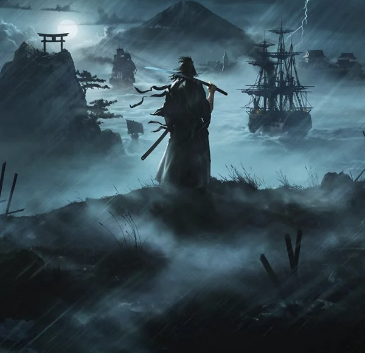

PS5-GAMES
Ontdek de games die jij wilt spelen, van exclusieve kaskrakers tot innovatieve indies, allemaal tot leven gebracht met de kracht van de PS5™-console.
Games die nu beschikbaar zijn Binnenkort verkrijgbaarExclusieve PS5-consolegames van PlayStation Studios


Helldivers™ 2
In deze coöp-shooter van Arrowhead Game Studios voor PS5 en PC moet je samen met maximaal drie vrienden een buitenaardse plaag bestrijden, die het voortbestaan van je thuisplaneet Superaarde bedreigt.
Releasedatum: 8 februari 2024
Meer informatie Laatste nieuws en updates-

Stellar Blade
De toekomst van de mensheid staat op het spel in een gloednieuw verhalend avontuur vol actie. Duik in een spectaculair vormgegeven postapocalyptische wereld waarin pracht en horror naadloos in elkaar overvloeien.
Meer informatie -

Rise of the Ronin
Maak een epische reis door het Japan van de 19e eeuw, dat verscheurd wordt door oorlog. Deze game van Team NINJA, de ervaren studio achter Nioh en NINJA Gaiden, is een actie-RPG in een open wereld met een focus op gevechten.
Meer informatie -
Marvel's Spider-Man 2
De Spider-mannen Peter Parker en Miles Morales beleven een spannend nieuw avontuur in de bejubelde Spider-Man-franchise van Marvel voor PS5.
Meer informatie -
God of War Ragnarök
Fimbulwinter is begonnen. Kratos en Atreus zoeken in alle negen werelden naar antwoorden terwijl Asgardiaanse strijdkrachten zich voorbereiden op de eindstrijd uit de profetie die het einde van de werelden zou inluiden.
Meer informatie Verken de serie -
The Last of Us Part I
In een verwoeste beschaving, waar geïnfecteerde en verharde overlevenden doen wat nodig is om in leven te blijven, wordt de vermoeide hoofdpersoon Joel ingehuurd om de 14-jarige Ellie uit een militaire quarantainezone te smokkelen. Dit begint als een kleine missie, maar verandert al snel in gure reis door het land.
Meer informatie Verken de serie -
Horizon Forbidden West™
Verken verre gebieden, vecht tegen grotere, nog indrukwekkendere machines en ontmoet verbazingwekkende nieuwe stammen als je terugkeert naar de post-apocalyptische verre toekomst van Horizon.
Meer informatie Verken de serie -
Gran Turismo 7
Of je nu competitief racet of voor de lol, auto's verzamelt of tunet, bestickeringen ontwerpt of foto's maakt – dankzij de verbluffende hoeveelheid speltypen, zoals de populaire GT-campagne, Arcade en Rijschool, vind je altijd jouw ideale lijn.
Meer informatie Verken de serie -
Ratchet & Clank™: Rift Apart
Knal je een weg door een interdimensionaal avontuur met Ratchet en Clank. Reis door dimensies als ze het opnemen tegen een boosaardige keizer uit een andere realiteit.
Meer informatie PS5-features -
Returnal™
Maak een einde aan de voortdurende chaos op een steeds veranderende buitenaardse planeet in deze veelgeprezen third-person roguelike shooter van Housemarque.
Meer informatie Beginnershandleiding -
Ghost of Tsushima™ Director's Cut
Breek met tradities en voer een ongebruikelijke oorlog om Tsushima te bevrijden in deze uitgebreide versie van het open-world actie-avontuur van Sucker Punch Productions.
Meer informatie Beginnershandleiding